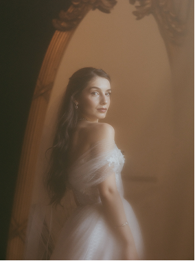

O encontro
Se conheceram numa viagem entre amigos e nunca mais se separaram.


Histórias de amor que tivemos o privilégio de fotografar

Ver

Se conheceram numa viagem entre amigos e nunca mais se separaram.
15 de março de 2024
Lago Esmeralda, Itu – SP
Ao ar livre
Lago Esmeralda - Itu - SP
 Ver
Ver


Fazenda Vila Real - Campinas - SP
08 de junho de 2024
Fazenda Vila Real, Campinas – SP
Íntima ao pôr do sol
Se conheceram na faculdade entre aulas e nunca mais se largaram.